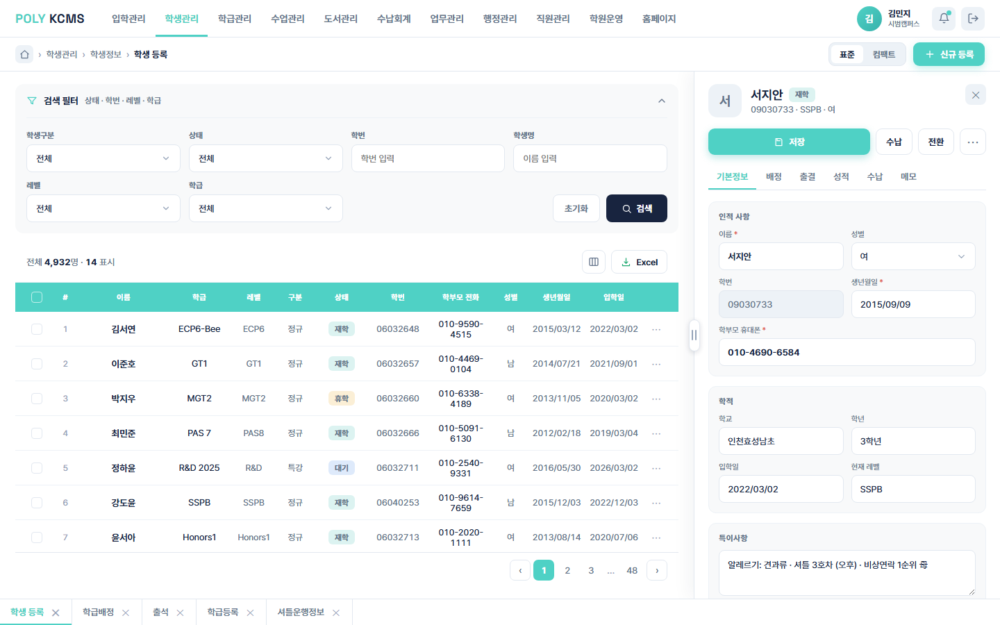
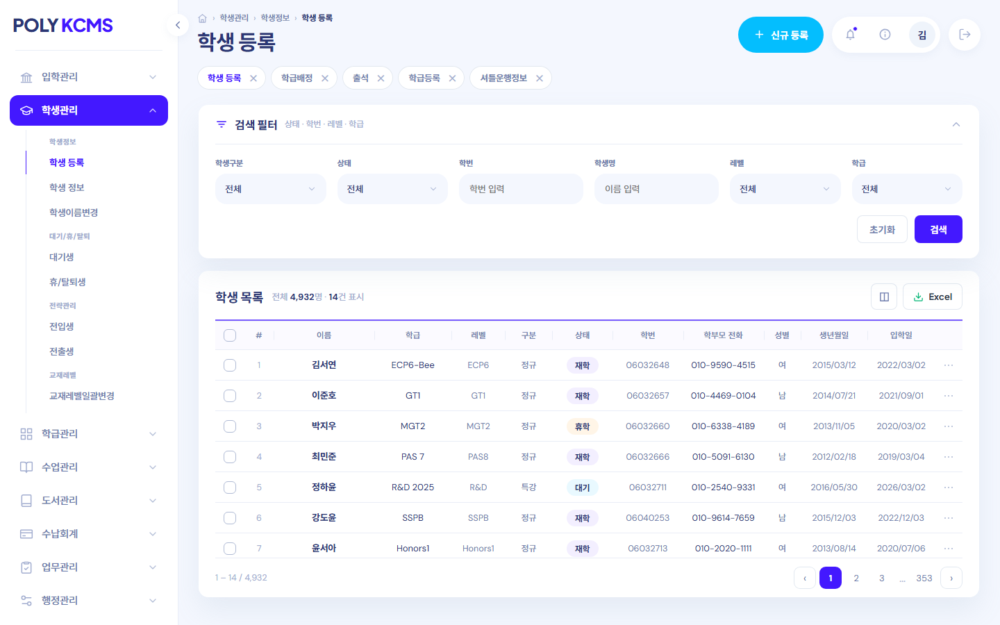

동일한 '학생 등록' 화면을 서로 다른 두 디자인 철학으로 구현했습니다.
두 시안은 같은 데이터·같은 기능을 담되, 내비게이션 구조·색·정보 밀도에서 뚜렷이 갈립니다.
각 시안에는 목록 데이터 글씨색을 단일 톤으로 통일한 '가독성 변형본'을 함께 두어 비교할 수 있습니다.

A형한 화면에서 최대한 많은 정보를 빠르게 다루는 실무 집중형 레이아웃입니다.
정보 밀도가 높아 한 화면에서 많은 데이터를 빠르게 다룰 수 있고, 목록과 상세를 즉시 오가며 반복 입력에 유리합니다. 넓은 세로 공간을 확보해 데이터 입·출력이 잦은 데스크톱 업무 담당자에게 잘 맞습니다.
A형 열기 (원본) → 가독성 변형 · 목록 데이터 #18243f 통일 →
B형여백과 카드로 정돈한 모던 대시보드형 레이아웃입니다.
시각적 위계가 뚜렷해 가독성이 높고 메뉴 탐색이 직관적이며, 카드와 여백으로 정돈된 심미적 완성도가 돋보입니다. 관리자·대시보드 뷰나 브랜드 인상을 중시하는 화면에 잘 맞습니다.
B형 열기 (원본) → 가독성 변형 · 목록 데이터 #2b3674 통일 →| 항목 | A형 | B형 |
|---|---|---|
| 디자인 차이 | ||
| 내비게이션 | 상단 가로 탭 + 메가메뉴 | 좌측 접이식 사이드바 |
| 브랜드 컬러 | 민트 / Teal (#4FD1C5) | 인디고 / Indigo (#4318FF) |
| 정보 밀도 | 높음 (컴팩트·실무형) | 중간 (여백·카드형) |
| 레이아웃 | 목록 + 상세 분할 (너비 조절) | 카드 구획 + 슬라이드 상세 |
| 세로 공간 | 넓음 (상단 바 1줄) | 보통 (상단 바 + 여백) |
| 태블릿 대응 | 상세 패널 비율 자동 조정 · 터치 드래그 리사이즈 | 사이드바 자동 축소(≤1280px) · 필터 그리드 단수 조정 |
| 공통 구현 기능 · A·B 동일 | ||
| 입력 · 폼 | 검색 필터(상태·학번·레벨·학급) · 인라인 폼 입력·저장 · 커스텀 셀렉트·드롭다운 | |
| 목록 · 상세 | 학생 목록 ↔ 상세 연동 · 상세 탭(기본·배정·출결·성적·수납·메모) | |
| 데이터 시각화 | 성적 차트(반평균 비교) · 출결 캘린더 | |
| 공통 UI | 상태 배지 · 페이지네이션 · 커스텀 오버레이 스크롤바 | |